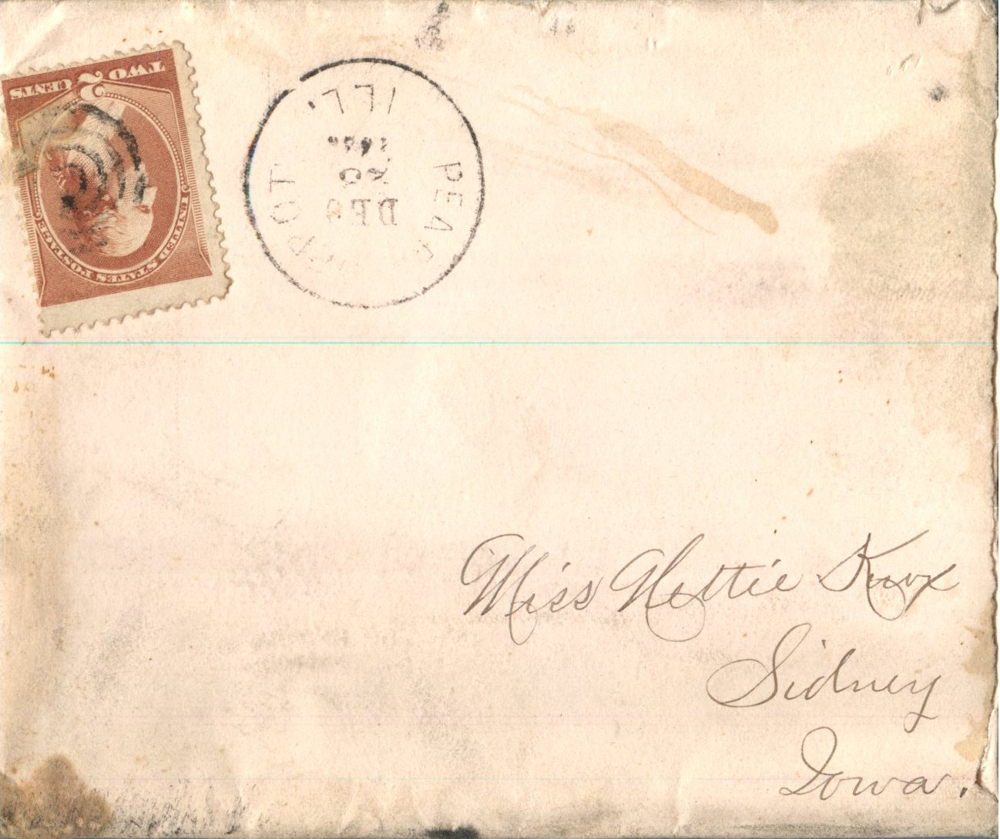
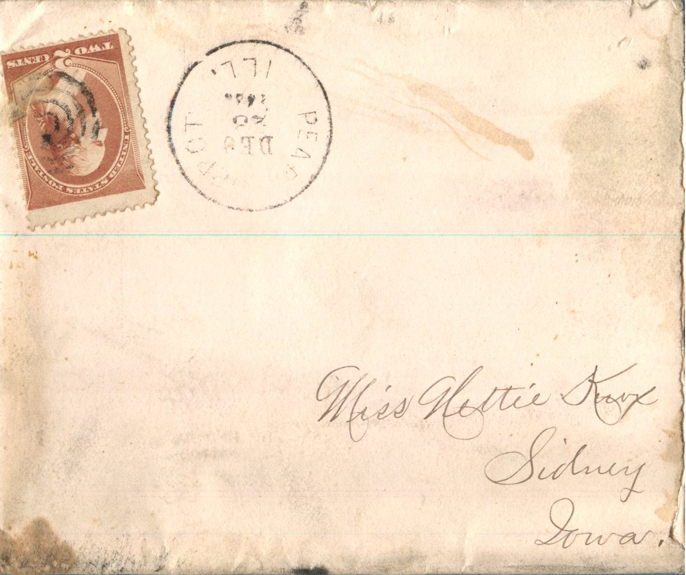

From: Maggie Knox, To: Jeanette Knox Chandler

 
From: Maggie Knox, To: Jeanette Knox Chandler Mailed From: Pearl, Illinois on December 23, 1885
Miss Nettie Knox Sidney, Iowa
Pearl, Ills December 23, 1885 Miss Nettie Knox, My dear sister I will now try to drop you a few lines in a hurry as it is almost train time and I have been so busy I did not take the time to write any sooner. I was glad to get so long a letter from you and to hear of you all being well as it leaves us all at present. Well Nettie I am so delighted Jasper Walk just came off the noon train today and said that he had rode on the train from Alvin to White Hall with Willie and that he had gone to St. Louis to work in a big drug store. I can't hardly believe it as I got a letter from Johnnie yesterday and he never spoke a word about it but then I suppose it is time I hope so any how for he will be so close to us. Perhaps he can be home with us Christmas. O I only wish you all would be here. We are going to have a nice time tomorrow night. We are going to have a tree in the church . We expect a fine time, Papa wrote John & Will letters yesterday and sent you $2.00 and John $5.00. That is awful little bit is the best they could do. Momma intended to send you both some money but she never got but $3.00 of Lige's money this month. So of course she could not send any. Ella and Mr. Bills came home yesterday. They have an awful sweet little baby. Ella isn't as big as a thimble. She is the She is the least little bit of a scrap you ever saw. I guess she will send you one of the baby's pictures. She gave me one. O yes and so did Lige give me one of his pictures. I guess you know he had some taken in St. Louis. He received them yesterday I think they are awful nice. I think they would have been better if he had kept his hat off. He is getting awful good . He lets me see most every letter he gets from you and you can bet that strikes me. Well, Izora and I went to Milton yesterday. We left home at 1 am and got back at 6, so you can see we made a day trip. She got Vinnie a lovely cloak or rather the making of it. She could not get a ready made cloak in Milton for Vinnie. The cloth is beautiful. It was $2.00 per yard. Also got herself a cloak for $5.00 and got Myrtle and May two big China dolls. I have got the dressing of them to do today so as to be ready for the tree tomorrow tonight. Mamma got each of the girls a cap the same as I sent Liney and that is all she could get for them. I am so sorry in one way that Willie has gone to St. Louis as he will be so far away from John but then I'll bet John will get along. I do hope he will get a school or some employment in a store for I don't like for him to have to go on a farm but then he would not have to stick to that always. John was telling me in his letter about John and Lucy acting the free Methodist. I would like to see them. I'll bet it is equal to a circus. Well Nettie, Papa is writing a few more lines to John and he is waiting on me to get through so I will close. I know you can't read this for I have written t in such a hurry. Don't wait so long as I have done. I will also try to do better in the future. Wishing you all a merry Christmas and a happy new years. I am your loving sister. Maggie Love to all.